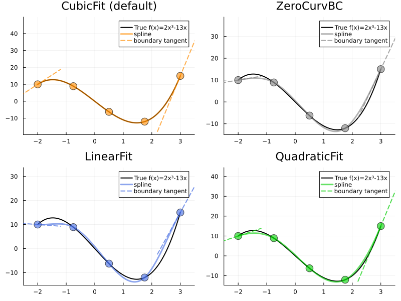
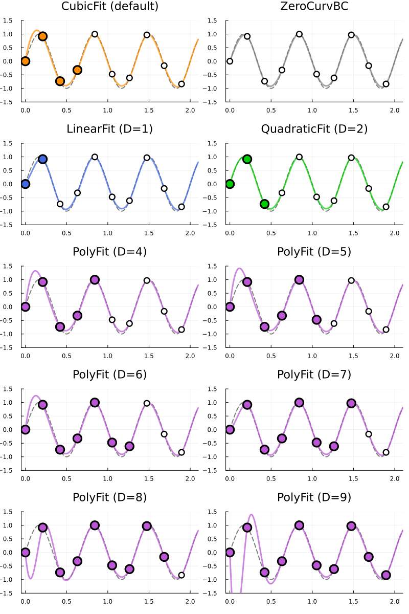

PointBC: Single-Point Boundary Conditions
PointBC types specify derivative conditions at a single endpoint. They are the building blocks used by both quadratic and cubic splines.
Derivative Types
Deriv1: First Derivative (Slope)
Specify the slope S'(endpoint) = v directly:
Deriv1(0.0) # Horizontal tangent
Deriv1(1.0) # 45° upward slope
Deriv1(-2.0) # Steep downward slopeDeriv2: Second Derivative (Curvature)
Specify the curvature S''(endpoint) = v:
Deriv2(0.0) # Zero curvature (inflection point behavior)
Deriv2(1.0) # Positive curvature (concave up)
Deriv2(-1.0) # Negative curvature (concave down)Deriv3: Third Derivative
For advanced use cases, specify S'''(endpoint) = v:
Deriv3(0.0) # Constant second derivative near endpointPolyFit: Automatic Derivative Estimation
When you don't know the exact derivative values, PolyFit{D} estimates them by fitting a degree-D polynomial to the nearest D+1 data points.
How It Works
PolyFit{D} performs these steps:
- Extract D+1 points from the endpoint (left: first D+1 points, right: last D+1 points)
- Fit a Lagrange interpolating polynomial through these points
- Evaluate the polynomial's derivative at the endpoint
This gives a data-driven estimate of the endpoint derivative without requiring manual specification.
Available Degrees
| Type | Points | Accuracy | Formula (uniform grid, left endpoint) |
|---|---|---|---|
LinearFit() = PolyFit{1} | 2 | O(h) | (y₂ - y₁) / h |
QuadraticFit() = PolyFit{2} | 3 | O(h²) | (-3y₁ + 4y₂ - y₃) / (2h) |
CubicFit() = PolyFit{3} | 4 | O(h³) | (-11y₁ + 18y₂ - 9y₃ + 2y₄) / (6h) |
PolyFit{N}() (N > 3) | N+1 | O(hᴺ) | Barycentric interpolation |
- LinearFit: Simplest, first-order accurate
- QuadraticFit: Default for quadratic splines — exact for quadratic polynomials
- CubicFit: Third-order accurate, exact for cubic polynomials
- PolyFit{N}: Arbitrary degree N — uses barycentric interpolation for N > 3
Match the polynomial degree to your data's smoothness. See the visual comparison below for examples.
Higher-degree fits are not always more accurate. For oscillatory or noisy data, high-degree polynomial fits can produce overshoot at boundaries. When in doubt, start with QuadraticFit or CubicFit and compare results visually.
Visual Comparison
Part 1: Smooth Polynomial Data
When the data near the boundary follows a smooth polynomial, higher-degree PolyFit estimates the true derivative more accurately.
The plots below show cubic_interp applied to f(x) = 2x³ - 13x with different boundary conditions. Notice how CubicFit() computes the exact boundary tangent, perfectly reproducing the original cubic.

Key observations:
- ZeroCurvBC: Zero-curvature assumption causes deviation from the true cubic
- LinearFit / QuadraticFit: Slightly underestimate the boundary slope
- CubicFit: Computes the exact boundary derivative, enabling perfect reproduction ✓
When the data near the boundary follows a smooth polynomial of degree ≤ D, PolyFit{D} computes the exact derivative.
Part 2: Oscillatory Data — When Higher Degree Fails
For oscillatory data (e.g., sin(x) with sparse sampling), higher-degree PolyFit can produce worse results due to overshoot at boundaries.
The plots below show the left boundary region of a longer interpolation interval. The gray dashed line is the true function. Open circles are all data points, while filled colored circles indicate the points used to estimate the left boundary derivative (2 for LinearFit, 3 for QuadraticFit, 4 for CubicFit, etc.).

Observations by degree:
| Degree | Behavior |
|---|---|
| D=1–2 | Stable with minimal undershoot |
| D=3 | Overshoot begins to appear at the left boundary |
| D=4–6 | Noticeable overshoot at the left boundary |
| D=7 | Follows the true function with slight undershoot |
| D=8, 9 | Severe overshoot with reversed slope |
High-degree polynomial fits on oscillatory or non-polynomial data can produce wild oscillations near boundaries. The fitted polynomial tries to pass through many points but overshoots between them.
- Start with QuadraticFit or CubicFit
- Only use higher degrees if your data is known to be a smooth polynomial
- Always visually inspect boundary behavior when changing
PolyFitdegree
Usage Examples
Quadratic Splines
using FastInterpolations
x = range(0.0, 2π, 15)
y = sin.(x)
# Default: QuadraticFit at left
quadratic_interp(x, y, 1.0)
# CubicFit at right for higher accuracy
quadratic_interp(x, y, 1.0; bc=Right(CubicFit()))
# Known slope at left
quadratic_interp(x, y, 1.0; bc=Left(Deriv1(1.0)))Cubic Splines
using FastInterpolations
x = range(0.0, 2π, 15)
y = sin.(x)
# Default: CubicFit (4-point polynomial fit)
cubic_interp(x, y, 1.0)
# Use ZeroCurvBC for zero-curvature endpoints
cubic_interp(x, y, 1.0; bc=ZeroCurvBC())
# Mix PolyFit with known derivative
cubic_interp(x, y, 1.0; bc=BCPair(CubicFit(), Deriv1(0.0)))Mathematical Background
Lagrange Interpolation
PolyFit{D} uses barycentric Lagrange interpolation for numerical stability:
\[p(x) = \frac{\sum_{i=0}^{D} \frac{\beta_i y_i}{x - x_i}}{\sum_{j=0}^{D} \frac{\beta_j}{x - x_j}}\]
where $\beta_i = \frac{1}{\prod_{j \neq i} (x_i - x_j)}$ are the barycentric weights.
The derivative is computed analytically from this form, avoiding explicit polynomial coefficient computation.
Accuracy Order
For a smooth function $f$ sampled on a grid with spacing $h$:
PolyFit{D}estimates $f'(x_0)$ with error $O(h^D)$- Higher D → higher accuracy, but requires more points
API Reference
See the full API documentation in Types Reference: